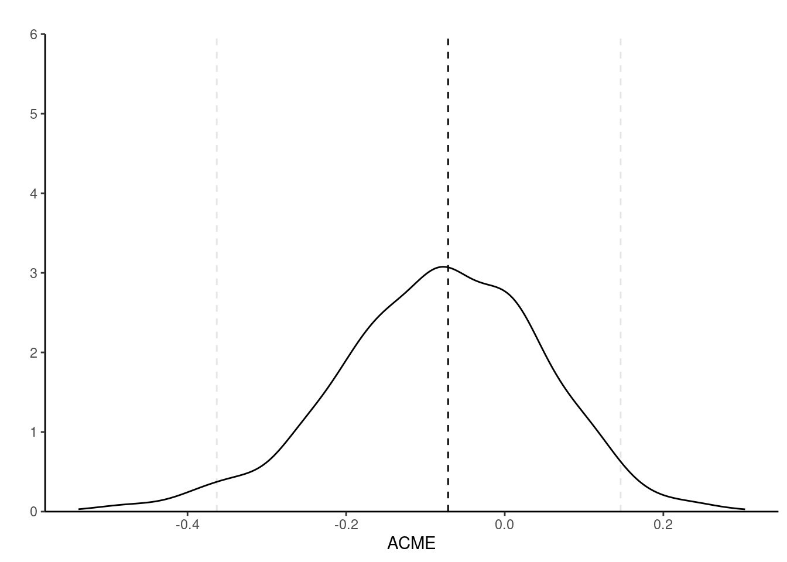

Linear mediation model
Download the R code and the SPSS code.
Consider linear regression models in a system where some response variable \(Y\) depends on a mediator, \(M\), and an experimental factor, \(X \in \{0,1\}\). The mediator model has expected value \[ M = \underset{\text{intercept}}{c_M} + \alpha X + \underset{\text{control variates}}{\boldsymbol{Z}_M^\top\boldsymbol{\delta}} + \underset{\text{error term}}{\varepsilon_M} \tag{1}\] while we have for the response \[ Y = \underset{\text{intercept}}{c_Y} + \underset{\text{direct effect}}{\beta X} + \gamma M + \underset{\text{control variates}}{\boldsymbol{Z}_Y^\top\boldsymbol{\omega}} + \underset{\text{error term}}{\varepsilon_Y}, \label{eq-responsemodel} \tag{2}\] The explanatory variables \(\boldsymbol{Z}_M\) for the mediator model of Equation 1, and \(\boldsymbol{Z}_Y\) for the response model Equation 2 are control covariates to account for confounders, and need not be the same in both models (but could be). In a randomized experiment where we manipulate the mediator, there is no need to include any control in Equation 1 lest we mistakenly create correlation by including colliders. The error terms \(\varepsilon_Y\) and \(\varepsilon_M\) are assumed to be independent mean-zero with common variance.
In the linear mediation model defined above and represented in Figure 1, the total effect of \(X\) on \(Y\) is \(\beta + \alpha \gamma\) (the average treatment effect, looking at the difference in response between treatment \(X=1\) and control \(X=0\)).
The average causal mediation effect (ACME) or natural indirect effect for treatment at level \(x\) is obtained by changing the potential outcome \(Y_i\{X, M_i(X)\}\) of individual \(i\) for the mediator \(M_i(X)\) while fixing the treatment level \(X\) to \(x\), so \[\begin{align*} \mathsf{ACME} = \mathsf{E}[Y_i\{x, M_i(1)\} - Y_i\{x, M_i(0)\}]. \end{align*}\] In the linear mediation model, we get subtituting the value of \(M\) from equation Equation 1 into Equation 2 \[\begin{align*} \mathsf{E}[Y_i\{x, M_i(1)\}] &= \underset{\text{intercept}}{c_Y + \gamma c_M} + \underset{\text{ACME}}{\alpha\gamma} + \beta x+ \underset{\text{effect of control variates}}{\gamma\boldsymbol{Z}_M^\top\boldsymbol{\delta} + \boldsymbol{Z}_Y^\top\boldsymbol{\omega}}\\ \mathsf{E}[Y_i\{x, M_i(0)\}] &=\underset{\text{intercept}}{c_Y + \gamma c_M} + \beta x +\underset{\text{effect of control variates}}{\gamma\boldsymbol{Z}_M^\top\boldsymbol{\delta} + \boldsymbol{Z}_Y^\top\boldsymbol{\omega}}\\ \end{align*} \] so the average difference between the two equations is \(\mathsf{ACME} = \alpha\gamma\).
Example 1
We consider an example from Experiment 1 of Bastian et al. (2014), who experienced the effect of the effect of shared pain (through a manipulation) on bonding.
This effect of pain remained when controlling for age (p = .048), gender (p = .052), and group size (p = .050). None of these variables were significantly correlated with experimental condition (ps > .136) or perceived bonding (ps > .925). To determine whether the marginal tendency for the pain tasks to be viewed as more threatening than the control tasks mediated the effect of pain on perceived bonding, we conducted a bootstrap analysis (Preacher & Hayes, 2008) using 5,000 resamples. The results of this analysis revealed that threat was not a significant mediator, indirect effect = −0.11, SE = 0.09, 95% CI = [−0.34, 0.03].
There are several problems with the description: while it seems that some covariate (age, gender, group size) were added to regression models, it is unclear whether they could be confounders, whether their effect is linear and in which (if any model they are included). Stating “bootstrap analysis” is the equivalent of “running a statistical test”: so vague it could mean anything, and the fact the output is random does not help with reproducibility.
The response variable \(Y\) is bonding, the experimental factor condition and threat, the average ALES subscale about the perception of the physical task, is the postulated mediator.
We use the mediation package (Tingley et al., 2014) for the model; the package certainly isn’t needed (nor the PROCESS macros) to run the bootstrap, which we could obtain with a single for-loop. However, it has utilities, notably for checking model assumptions, that are convenient.
Code
library(mediation, quietly = TRUE)
data(BJF14_S1, package = "hecedsm")
MsX <- lm(threat ~ condition + gender + groupsize + age,
data = BJF14_S1)
YsXM <- lm(bonding ~ condition + threat + gender + groupsize + age,
data = BJF14_S1)Table 1: Coefficients of the regression models
| term | estimate | std.error |
|---|---|---|
| (Intercept) | 2.66 | 1.47 |
| condition [pain] | 0.66 | 0.32 |
| threat | -0.24 | 0.36 |
| gender [female] | -0.02 | 0.33 |
| group size | 0.02 | 0.13 |
| age | 0.03 | 0.07 |
| term | estimate | std.error |
|---|---|---|
| (Intercept) | -0.16 | 0.59 |
| condition [pain] | 0.30 | 0.12 |
| gender [female] | -0.05 | 0.13 |
| group size | -0.07 | 0.05 |
| age | 0.07 | 0.02 |
Both of the threat and bonding measures are average of Likert scales. We include the controls in the regression for the response to account for potential confounding between threat level and shared bonding: it is unclear whether the authors used the control covariates or whether these make sense.
Code
set.seed(80667)
linmed <- mediate(
model.m = MsX,
model.y = YsXM,
sims = 1000L, # number of bootstrap simulations
boot = TRUE, # use bootstrap
boot.ci.type = "perc", # type of bootstrap: percentile
mediator = "threat", # name of mediator
treat = "condition", # name of treatment
control.value = "Control", # name of control (level of 'condition')
treat.value = "Pain") # name of treatment (level of 'condition')
summary(linmed)| estimate | lower 95% CI | upper 95% CI | p-value | |
|---|---|---|---|---|
| ACME | -0.071 | -0.363 | 0.146 | 0.548 |
| ADE | 0.660 | -0.012 | 1.257 | 0.056 |
| total effect | 0.588 | 0.012 | 1.145 | 0.048 |
| prop. mediated | -0.121 | -1.501 | 0.615 | 0.564 |
The first line of Table 2 gives the average reverse natural indirect effect or average conditional mediated effect (labelled ACME), the second the average direct effect (ADE) and the third the total effect (ADE + ACME). The point estimate for ACME, \(\alpha\gamma\) is \(\widehat{\alpha}\widehat{\gamma} = -0.07\). The bootstrap sampling distribution is skewed to the left, a fact reflected by the asymmetric percentile confidence interval.

The sequential ignorability assumption cannot be verified, but we can see what impacts violations would have on the coefficients: the expected value of the coefficient \(\widehat{\gamma}\) is \(\gamma + \mathsf{Cov}(\varepsilon_M, \varepsilon_Y)/\mathsf{Va}(\varepsilon_M)\); the second component is a bias term that does not vanish, even when the sample size grows (Bullock et al., 2010). The variance of the error of the mediation and response models can be estimated, and we can vary the correlation coefficient, \(\rho=\mathsf{Cor}(\varepsilon_M, \varepsilon_Y)\), to assess the sensitivity of our conclusions if there was confounding.
Code
linmed_sensitivity <- medsens(linmed)
summary(linmed_sensitivity)
Mediation Sensitivity Analysis for Average Causal Mediation Effect
Sensitivity Region
Rho ACME 95% CI Lower 95% CI Upper R^2_M*R^2_Y* R^2_M~R^2_Y~
[1,] -0.4 0.2533 -0.0236 0.5302 0.16 0.1144
[2,] -0.3 0.1626 -0.0723 0.3975 0.09 0.0644
[3,] -0.2 0.0805 -0.1288 0.2898 0.04 0.0286
[4,] -0.1 0.0034 -0.1969 0.2037 0.01 0.0072
[5,] 0.0 -0.0714 -0.2788 0.1360 0.00 0.0000
[6,] 0.1 -0.1462 -0.3748 0.0825 0.01 0.0072
[7,] 0.2 -0.2233 -0.4850 0.0385 0.04 0.0286
Rho at which ACME = 0: -0.1
R^2_M*R^2_Y* at which ACME = 0: 0.01
R^2_M~R^2_Y~ at which ACME = 0: 0.0072 Code
plot(linmed_sensitivity)
The medsens function implements the sensitivity diagnostic presented in Section 5.1 of Imai et al. (2010) for the linear mediation model. By default, the correlation \(\rho\) varies in 0.1 increments. We can see the wide range of the ACME if there was correlation between residuals from the mediation and the response model, highlighting the wide range of values that could be returned: the ACME could go from \(0.2\) to \(-0.288\) for correlations in the range \(\rho \in [-0.4, 0.4]\). In this example, nearly any correlation in this range would lead to “insignificant results”, mostly because of the small sample size. In a situation where we had found a significant (sic) result, we could observe how much correlation btween would be needed for this effect to be an artefact of correlation and vanish.
According to the documentation of the medsens function (?medsens), there are two variants of the estimated effect size, either computing the proportion of the total (tilde, R^2_M~R^2_Y) or residual (starred, R^2_M*R^2_Y*) variance from the mediation and outcome models that are due to hypothetical unobserved confounders.
References
Bastian, B., Jetten, J., & Ferris, L. J. (2014). Pain as social glue: Shared pain increases cooperation. Psychological Science, 25(11), 2079–2085. https://doi.org/10.1177/0956797614545886
Bullock, J. G., Green, D. P., & Ha, S. E. (2010). Yes, but what’s the mechanism? (Don’t expect an easy answer). Journal of Personality and Social Psychology, 98(4), 550–558. https://doi.org/10.1037/a0018933
Imai, K., Keele, L., & Yamamoto, T. (2010). Identification, inference and sensitivity analysis for causal mediation effects. Statistical Science, 25(1), 51–71. https://doi.org/10.1214/10-STS321
Tingley, D., Yamamoto, T., Hirose, K., Keele, L., & Imai, K. (2014).
mediation: R package for causal mediation analysis. Journal of Statistical Software, 59(5), 1–38. https://doi.org/10.18637/jss.v059.i05